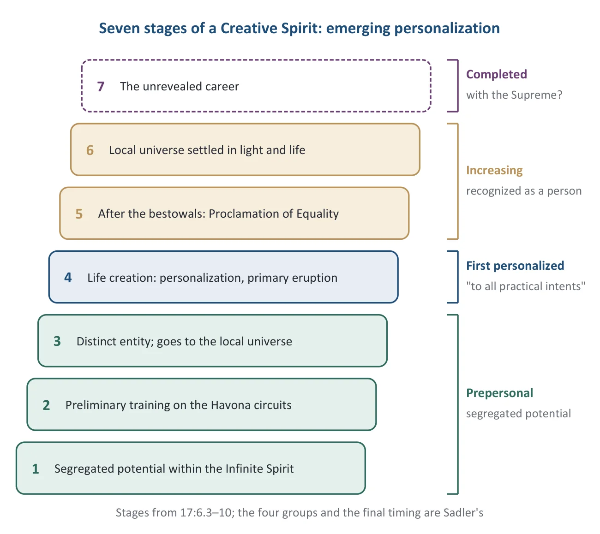

Técnicas de transformação
Original: Apêndice VIII, Técnicas transformadoras (pp. 249–292)
NESTE CAPÍTULO
Se o Apêndice VII traçou o caminho pelo qual o potencial amadurece, o Apêndice VIII examina as várias maneiras pelas quais o potencial amadurecido se torna um ser factual: criação, trinitarização, emergência, fragmentação, evolução, personalização emergente e o abraço da Deidade. Sadler procura no texto o alcance e os limites de cada técnica e compara-as, sublinhando que o que é criado começa a partir de um status que lhe foi dado, enquanto o que evolui conquista tudo por si mesmo. Ele termina com uma ousada nota de rodapé que interpreta o fenômeno das “quartas criaturas” por meio da proporção de hereditariedade de Mendel.
1. Os muitos caminhos do potencial ao factual (orig., p. 249)
Nós, que vivemos num mundo evolucionário, estamos acostumados ao contraste entre a criação instantânea e a evolução lenta. Mas esses não são os únicos caminhos pelos quais seres e coisas passam do potencial ao factual. O Livro de Urântia diz que um único e mesmo Deus atua de três modos distintos.
Deus, enquanto suprapessoa, manifesta; Deus, enquanto pessoa, cria; Deus, enquanto pré-pessoa, fragmenta-se;30:1.99
Várias outras técnicas devem ser acrescentadas. Os criadores e certas criaturas podem trinitarizar novos seres. No universo local, tanto os criadores quanto as criaturas evoluem. O Espírito Criativo é um ser único, a focalização do Espírito Infinito no universo local em processo de tornar-se pessoal; e as criaturas que recebem um abraço da Deidade podem passar por uma mudança de status. Sadler reúne tudo isso sob o título de técnicas transformadoras. O que quer que venha a existir nunca surge do nada; é sempre potencial que foi transformado.

2. A técnica da criação (orig., pp. 250–260)
A criatividade no Paraíso e a criatividade no tempo e no espaço
Sadler começa com uma advertência sobre a criação. Um procedimento que é padrão no tempo e no espaço não precisa valer em Havona, e menos ainda no Paraíso. O Livro de Urântia não trata a qualidade de criador como um atributo divino entre outros.
A faculdade de criar dificilmente é um atributo de Deus; é mais algo que vem em conseqüência da Sua natureza atuante.3:0.3
Sadler toma aqui a qualidade de criador num sentido amplo, que abrange todo modo de trazer qualquer coisa à existência. Observando que o texto põe lado a lado seres que são “trinitarizados, criados, gerados por factualidades ou eternizados” [13:1.12], ele conjectura que “eternizados” possa referir-se a um ato supracriador da Deidade do Paraíso.
Sobre a criação no tempo e no espaço, o texto é muito mais específico. Quando a Trindade do Paraíso ativa os potenciais estáticos, a Ultimidade da Deidade transforma os “potenciais indiferenciados” em planos separados e definidos, e esses planos ficam sob a supervisão dos Arquitetos Mestres [118:4.6]. No último estágio, os seres finitos são feitos a partir do potencial do Supremo. Os organizadores da força transformam a força-espaço em energia, os diretores de potência transmutam a energia em matéria, e os Portadores da Vida iniciam na matéria sem vida as mudanças da vida [42:1.5]. Os Criadores Supremos fazem o mesmo tipo de trabalho com energias divinas mais elevadas.
As fronteiras da criatividade
O domínio da criação tem fronteiras? Sadler crê que sim. A sua fronteira interior está onde Deus, como pessoa, entra em relações subinfinitas com outras pessoas. A sua fronteira exterior é o “nível criador final” em que Deus, o Último, funciona [0:2.17]. A criatividade em sentido estrito é subinfinita em quantidade e subabsoluta em qualidade; opera somente dentro do reino da realidade relativa.
Quatro tipos de criação
Dentro dessas fronteiras, Sadler distingue pelo menos quatro tipos de criatividade.
O primeiro é a criatividade ilimitada. O número de Filhos Criadores continua a aumentar, e os Espíritos Criativos continuam a produzir serafins sem fim. O segundo é a criatividade limitada por planos. Ao contrário dos Filhos Criadores, as Uniões dos Dias são em número fixo.
Ora, sabemos que há exatamente setecentos mil Uniões dos Dias; e nenhum mais está sendo criado.21:1.4
A razão não é que a Trindade não pudesse fazer mais. Uma União dos Dias para cada universo local corresponde exatamente ao plano, e não há necessidade de outras. Sadler considera que a maioria das ordens de número fixo é limitada justamente desse modo, por uma escolha dos seus criadores.
O terceiro é a criatividade limitada pelas circunstâncias. Aqui o limite não está na vontade do criador, mas na própria situação. Os Sete Espíritos Mestres são o caso clássico.
Tivesse sido possível produzir um número maior de Espíritos Mestres, e eles teriam sido criados, mas há justamente sete possibilidades de associações inerentes às três Deidades, e apenas sete.16:0.1
Nem mesmo as Deidades, observa Sadler, alteram a matemática. Na mesma classe incluem-se a incapacidade do Filho Eterno de transmitir aos Filhos Criadores o poder de fazer ainda outro criador [6:5.4], o número fixo dos Mensageiros Solitários e o único Brilhante Estrela Matutino em cada universo local.
mas esses Filhos, em união com as Filhas do Espírito Infinito, podem criar apenas um Brilhante Estrela Matutino em cada universo,33:4.2
Sadler conjectura que, em cada universo local, algum potencial básico é esgotado por essa primeira criação.
Neste ponto, Sadler reúne os “seres-modelo e primogênitos”: o Michael primogênito, os anjos-modelo originais, Nâmbia, o primeiro Portador da Vida de Nébadon, Gavália, a primeira Estrela Vespertina, e outros. A sua posição especial pode vir de uma diferença de natureza criada, ou simplesmente do fato de terem sido os primeiros. Grandfanda fornece o seu contraste. Como primeiro mortal a chegar a Havona, Grandfanda provavelmente não diferia em natureza dos outros ascendentes; ele encabeça o corpo de finalitores mortais apenas porque chegou primeiro. O primeiro Michael, ao contrário, foi muito provavelmente único desde o momento da sua criação, e Sadler inclina-se para essa opinião.
O quarto é a criatividade reflexa e refletiva, em que o ato de um criador suscita um ato criador dentro de outro. Sadler não tem certeza de que as duas formem um só grupo, mas dá um exemplo de cada uma. No momento em que o Pai Universal e o Filho Eterno personalizam um novo Filho Criador, ocorre no Espírito Infinito uma “reação suprema de complemento”, e o potencial da futura consorte-Espírito é segregado [17:6.3]. Sadler encontra nessa simultaneidade a razão por que o nosso Michael é a personalização do conceito número 611.121 e o Espírito Criativo de Sálvington tem o mesmo número [33:1.1, 33:3.2]. O seu exemplo de criatividade refletiva são os Conciliadores Universais. Quando um Espírito Mestre cria mil Servidores de Havona, o Espírito Refletivo que reflete esse Espírito Mestre em cada superuniverso produz imediatamente mil conciliadores, sete mil ao todo [25:2.2].
Criação não é procriação
Sadler acrescenta uma nota de rodapé que traça uma linha clara entre criação e procriação. As únicas ordens procriadoras nomeadas em O Livro de Urântia são os mortais, os Filhos Materiais e as criaturas intermediárias. A criação é produção, o trazer à existência de algo novo; a procriação é reprodução, a repetição da própria espécie. A intenção de um criador fixa, dentro de amplos limites, a natureza de um novo ser, ao passo que a intenção dos pais que procriam determina apenas que um filho nascerá, e não qual será a sua natureza. Nesse sentido, Sadler considera a origem das criaturas intermediárias primárias e secundárias próxima da procriação. Cada casal produziu mil criaturas intermediárias primárias [77:1.5] ou 248 secundárias [77:6.4] antes que a sua capacidade se esgotasse, e toda a sua prole era de uma única espécie. O que determinou a natureza dessa prole, sugere Sadler, não foram os pais, mas os planos de criadores superiores.
3. A técnica da trinitarização (orig., pp. 260–269)
Em que a trinitarização difere da criação
A trinitarização assemelha-se à criação por fazer surgir novos seres. Sadler, no entanto, vê pelo menos duas diferenças. A criação não é segredo, mas a trinitarização está entre os segredos de Vicegérington e de Solitarington [13:1.12]. E, enquanto a criação está confinada aos níveis subabsolutos, a trinitarização não está, pois o Espírito Infinito, que apareceu por meio da primeira trinitarização, está em pé de igualdade ao lado do Pai e do Filho.
Sadler encontra a palavra “trinitarização” usada em três sentidos no texto: o abraço da Trindade, a trinitarização ilimitada e a trinitarização limitada.
O abraço da Trindade
O texto também chama de trinitarização o abraço de certas criaturas pela Trindade do Paraíso. Os Filhos Trinitarizados de Realização, de Seleção e de Perfeição surgem desse modo e são designados para os governos dos superuniversos. O abraço eleva o status, mas fixa o crescimento.
pois o abraço da Trindade parece fazer precipitar, da corrente do tempo futuro, muitos dos potenciais irrealizados dos seres-criaturas.22:4.5
Como uma substância dissolvida que se precipita de uma solução, o que um dia teria sido alcançado solidifica-se de uma só vez no presente. Nos termos de Sadler, o finalitor abraçado recebe antecipadamente o que teria finalmente obtido como espírito do sétimo estágio [40:10.12].
Trinitarização ilimitada e trinitarização limitada
A diferença entre os dois sentidos restantes aparece claramente numa tabela.
| Aspecto | Criação | Trinitarização ilimitada | Trinitarização limitada |
|---|---|---|---|
| Quem atua | Um criador | As Deidades do Paraíso (duas ou três) | Pai e Filho; duas criaturas qualificadas |
| Efeito sobre os pais | Nenhum | Nenhum | Os pais tornam-se de algum modo um só |
| Status da prole | Inferior ao criador | Não igual aos pais | Igual em status aos pais |
| Repetição | Possível | Sem limite | Uma única vez |
As criaturas glorificadas que se engajam em tais aventuras de trinitarização podem participar de apenas uma experiência desta, enquanto, com as Deidades do Paraíso, parece não haver nenhum limite quanto à execução repetida dos episódios de trinitarização.22:7.3
Sadler crê que os Filhos não revelados trinitarizados pelas Deidades surgiram por trinitarização ilimitada. Observa também que o texto às vezes usa a palavra de modo frouxo, quase como sinônimo de criação, como quando diz que os Anciães dos Dias foram todos trinitarizados no mesmo momento [18:3.4].
O protótipo da trinitarização limitada é a origem do Espírito Infinito. Depois desse acontecimento, o Pai e o Filho tornaram-se um como Pai-Filho; o Espírito Infinito é uma Deidade igual a Eles; e não pode haver um segundo Espírito Infinito. Sadler concebe esse primeiro acontecimento em três passos — dualização, trinitarização e formação da Trindade —, mas sustenta que a ordem é apenas conceitual: de fato, os três ocorreram juntos, e em nenhum momento a Deidade esteve dividida. Levado escala abaixo, o mesmo princípio diz o seguinte. Quando duas Deidades infinitas trinitarizam, aparece uma terceira Deidade infinita. Quando dois criadores subinfinitos trinitarizam, resultaria um terceiro criador subinfinito. O texto apenas relata a opinião de que, em idades futuras, poderá ocorrer uma união mais estreita entre um Filho Criador e uma Ministra Divina [56:7.7]; Sadler a entende como uma trinitarização por dois criadores. E, quando duas criaturas trinitarizam, resulta uma terceira criatura.
O alcance temporal da trinitarização por criaturas
Aqui Sadler nota uma inversão intrigante. Um Filho Criador maneja o potencial de modo muito mais profundo e amplo do que qualquer par de criaturas. Contudo, ao longo do eixo das idades, ele está mais estreitamente limitado, pois, ao tornar-se um Filho Mestre, renuncia ao poder de criar tipos inteiramente novos de criaturas na idade presente do universo [21:5.6]. A trinitarização por criaturas, por outro lado, não está presa às necessidades da idade presente. Ela traz à factualidade, antecipadamente, potenciais do Supremo ainda não realizados, e o seu propósito parece ser a preparação para as idades futuras.
Sadler divide os filhos trinitarizados por criaturas em dois grupos. Os Filhos Trinitarizados por Ascendentes incorporam potenciais espirituais do Supremo Todo-Poderoso, os Filhos Trinitarizados pelo Paraíso-Havona, os do Supremo, e ambos os grupos são, portanto, filhos “pós-Supremo”. Servem nos circuitos internos de Havona, nos mundos do Espírito Infinito no Paraíso e nos universos locais, e mais tarde trabalharão como Corpo de Finalitores Trinitarizados no espaço exterior ou se reunirão nas sedes-centrais dos superuniversos ao encerrar-se esta idade. Os Filhos Trinitarizados do Destino, trinitarizados conjuntamente por um finalitor e uma criatura do Paraíso-Havona, incorporam a Mente Suprema Última e são, por isso, filhos “pós-últimos” [22:7.14]. Não podem servir nos universos atuais; retiram-se para Vicegérington, sob a custódia dos Arquitetos do Universo-Mestre. A conclusão de Sadler é que as criações dos criadores se ajustam às necessidades da idade presente, ao passo que as trinitarizações das criaturas se voltam para as idades vindouras.
4. A técnica da emergência (orig., pp. 269–274)
Por que “emergir” (eventuate)?
Emergência é a palavra usada para o modo como os Transcendentores vêm a existir. O texto diz que os seus autores conhecem a origem deles, mas receberam instruções de não a revelar [31:9.2]; ainda assim, explica por que essa palavra em particular foi escolhida.
Esses Transcendentores não criam nenhum ser, e também nunca foram criados. Ao falar da sua origem, com o intuito de evitarmos usar um novo termo — uma designação arbitrária e sem sentido — , parece-nos melhor dizer que os Transcendentores simplesmente derivam-se, ou acontecem ou manifestam-se.31:8.3
Sadler raciocina que uma palavra escolhida justamente para evitar a falta de sentido deve ter sentido, e consulta o significado de dicionário de “eventuate” (emergir): acontecer por fim, resultar. A sua raiz, “event” (evento), designa na teoria da relatividade uma ocorrência num único ponto do espaço-tempo. O uso no texto mais próximo desse sentido é o seguinte.
As relações existem entre dois objetos, mas três ou mais objetos formam e explicitam um sistema;112:1.17
Ninguém planeja nem constrói um sistema. Quando três ou mais coisas estão dentro de um mesmo quadro, um sistema simplesmente surge. A descrição que o texto faz da Trindade como uma realidade supersomatória que se “factualiza” na conjunção das três Deidades do Paraíso [104:2.4] usa a palavra do mesmo modo. Emergir é acontecer inevitavelmente, porque o resultado estava latente na situação desde sempre.
A compossibilidade e os planos de Deus
Sadler liga essa intuição ao princípio da coerência. O texto diz que a onipotência traz consigo um corolário chamado “compossibilidade”.
Dentro da moldura do tempo-espacial, e do ponto de referência intelectual da compreensão mortal, mesmo o Deus infinito não pode criar círculos quadrados nem produzir um mal que seja inerentemente bom.118:5.1
Uma vez que Deus faz um círculo, a circularidade torna-se a natureza de todo círculo, e um círculo quadrado é impossível. Do mesmo modo, Deus não “cria” a fraternidade como um ato separado: no momento em que Ele se torna o Pai de todas as pessoas, a fraternidade decorre por si mesma dessa paternidade [12:7.10]. Com base nesses dois exemplos, Sadler propõe uma analogia. Quando Deus forma um plano, tudo o que é eternamente requerido para o início, a realização e a consumação desse plano aparece com ele, inevitavelmente; de outro modo, não seria um plano, mas um devaneio. Numa fórmula espirituosa, Sadler diz que Deus conhece bastante bem o modo subjuntivo, mas pensa e planeja no “indicativo eterno”.
Vistos sob essa luz, os Arquitetos do Universo-Mestre são seres que apareceram de acordo com o conceito que Deus tinha do universo-mestre no momento em que o concebeu. Não são criaturas, pois nunca foram criados, e não são criadores, pois não criam. Sadler chama-os de “iniciadores” (inceptors): seres que abrem a obra muito antes que os criadores entrem no palco do espaço. Tomando como pista a observação do texto de que o Absoluto da Deidade pode ter tido participação no modo como os Transcendentores se originaram [31:8.3], ele conjectura ainda que o plano de Deus, passando pela Trindade, ecoou no Absoluto da Deidade, e que o Absoluto da Deidade então precipitou do potencial os seres de que o plano necessitava. O próprio Sadler qualifica tudo isso de raciocínio especulativo.
5. A técnica da fragmentação (orig., pp. 274–276)
Os Ajustadores e os outros fragmentos do Pai vêm a existir por fragmentação. Sadler agrupa com ela três casos em que o espírito divino é individualizado. Primeiro, o Espírito Infinito e os Espíritos Criativos fragmentam um espírito pré-mental, e os ascendentes fusionados com esse espírito tornam-se mortais fusionados ao Espírito. Segundo, o Filho Eterno não pode fragmentar-Se, mas um Filho Criador pode individualizar uma porção do seu espírito, e os que se fusionam com ela tornam-se mortais fusionados ao Filho [30:1.102]. Terceiro, o Pai Universal, no nível pré-pessoal, destaca fragmentos da Sua natureza de Deidade, e os que se fusionam com um tal Ajustador tornam-se mortais fusionados ao Pai.
Também a fragmentação tem o seu segredo: é o segredo de Divínington. Um Ajustador é subinfinito em quantidade, mas Deidade não diluída em qualidade [107:1.2]. Os Ajustadores Personalizados alcançam um status único.
são onipessoais — eles existem antes da personalidade, eles são a personalidade, e existem após a personalidade.109:7.4
6. A técnica da evolução (orig., pp. 276–279)
A criatividade no tempo
Sadler define a evolução como criatividade no tempo. Como o tempo divide um processo em pequenos passos, as criaturas que estão dentro dele podem perceber a mudança, compreendê-la em certa medida e participar dela diretamente. A evolução também tem o seu segredo, o segredo de Ascêndington: o mistério da alma imortal que cresce dentro da mente mortal [13:1.22].
A diferença entre criação e evolução está no ponto de partida. Um ser criado começa de um status que não conquistou; um ser em evolução conquista tudo o que tem. Sadler oferece três exemplos. Os Anciães dos Dias, perfeitos apenas pela criação, ilustram a criação pura. Os serafins, que partem de um status criado e crescem até se tornarem coordenados com os seconafins, ilustram a criação mais evolução. Os mortais ilustram a evolução pura: nascidos de pais, adquirem um a um o status de filho pela fé, filho ascendente, ser espiritual, peregrino de Havona, recém-chegado ao Paraíso e finalitor. Até a vinda do Ajustador espera pela primeira decisão moral.
A evolução produz valores que a criação não pode produzir. Dos Conselheiros Técnicos o texto diz:
Uma tal biblioteca viva, da lei aplicada, não poderia ser criada; esses seres devem evoluir por meio da experiência real.25:4.16
Decisão e ação: o mecanismo prático do crescimento
Como, então, uma pessoa cresce de fato? Sadler parte de uma breve prescrição do texto.
As chaves do Reino dos céus são: sinceridade, e mais sinceridade; e mais sinceridade ainda. Todos os homens têm o alcance dessas chaves. Os homens usam-nas — avançando em status espiritual — por meio de decisões, de mais decisões e outras decisões mais, ainda.39:4.14
O texto chama em outro lugar a ação de “a realização das decisões” [110:6.17]. Sadler desdobra isso em três passos: o crescimento começa com a honestidade, realiza-se pela coragem e completa-se fazendo efetivamente algo. Se a vida é um processo que se dá entre um organismo e o seu ambiente [112:1.13], então a decisão seguida de ação aviva o intercâmbio entre o eu e o seu ambiente. Para uma criatura finita, esse ambiente é, em última instância, a imanência do Supremo. Por isso, na interpretação de Sadler, o crescimento finito consiste em “ingerir” o potencial do Supremo pela decisão e “digeri-lo” em factualidade pela ação. O Ajustador é quem constrói a alma, mas a própria personalidade tem uma qualidade criativa, “a evolução da predominância” [112:2.15]. Tampouco o ambiente é passivo.
E assim, na medida em que lutamos pela expressão pessoal, o Supremo está lutando em nós, e conosco, pela expressão da deidade.117:4.6
7. A personalização emergente (orig., pp. 279–287)
Origens não convencionais da personalidade
A personalidade não surge por si mesma.
Mas nunca o impessoal transmuta-se diretamente em pessoal. A personalidade nunca é espontânea, é uma dádiva do Pai do Paraíso.0:5.4
O texto fala de dois tipos de personalidade, da Primeira Fonte e da Terceira Fonte [9:8.10]. Sadler, porém, identifica dois casos que não se enquadram em nenhum deles. Um é o Espírito Criativo: o texto diz que os Espíritos Criativos Maternos “por si próprios são uma classe específica” [9:8.11]; o outro é a Deidade experiencial, que ainda está passando pelas “eras pré-pessoais do desenvolvimento do poder experiencial” [10:5.5]. Como em ambos a personalidade vai despontando gradualmente, Sadler chama isso de “personalização emergente”.
Os sete estágios de um Espírito Criativo
Sadler reagrupa em quatro conjuntos os sete estágios de um Espírito Criativo descritos no documento 17. Nos três primeiros estágios, o Espírito é pré-pessoal. Ela começa como um potencial segregado dentro do Espírito Infinito, passa por um treinamento preliminar nos circuitos de Havona e, em resposta à “oração de identificação” de um Espírito Mestre, aparece pela primeira vez como entidade distinta e parte com um Filho Criador para um universo local. No quarto estágio, quando é declarada a intenção de criar vida, realizam-se no Paraíso as cerimônias de personalização, e com a “erupção primária” ela é personalizada pela primeira vez [17:6.7]. No quinto e no sexto estágios, após a “Proclamação da Igualdade” [33:3.6] do Filho Criador, as suas qualidades pessoais aumentam ainda mais. O sétimo estágio é a “carreira não revelada” [17:6.10].

Sadler assinala com cuidado que em nenhum lugar o texto chama um Espírito Criativo de pessoa sem alguma qualificação. Diz apenas que o Filho Criador a considera uma pessoa, que ela é uma pessoa “para todos os propósitos e intentos práticos”, e que alcança o status de personalidade. Sadler não pensa que essas qualificações sejam acidentais. Ele infere que, a partir do quarto estágio, o Espírito Criativo é uma pessoa em formação, e que a sua personalização só se completará no sétimo estágio. O momento, sugere ele, será quando cada um dos setecentos mil universos locais estiver estabelecido em luz e vida, ou seja, quando o Ser Supremo emergir.
Uma repetição do Espírito Infinito
Sadler apresenta agora uma teoria ousada: no tempo e no espaço, o Espírito Criativo está reencenando o que o Espírito Infinito outrora fez no Paraíso, na eternidade.
Embora penetre todos os universos do tempo e do espaço, o Espírito Infinito funciona a partir da sede-central de cada universo local, na forma de uma focalização especializada, adquirindo qualidades de plena personalidade, por meio da técnica da cooperação criativa com o Filho Criador.33:3.1
Sadler observa que o texto chama o Espírito Infinito, na época em que Havona apareceu, de “agência executiva” da parceria Pai-Filho [8:1.3], e lê nisso o indício de uma personalidade ainda não completada. Se Havona tivesse sido criada por etapas, poder-se-ia ter observado o Espírito Infinito naquilo que pareceria o processo de tornar-se pessoa. Mas a criação central apareceu de uma só vez como existência eterna, e o mesmo aconteceu com o Espírito Infinito.
Deidades que dependem das suas criações
Dessa comparação Sadler tira uma generalização que divide criadores e Deidades em duas classes.
| Classe | Exemplos | Quando a personalidade se completa |
|---|---|---|
| Pessoais independentemente de uma criação | O Filho Eterno, os Filhos Criadores, os Sete Espíritos Mestres | Antes que as suas criações estejam acabadas |
| Personalizados na dependência de uma criação | O Espírito Infinito | Quando Havona apareceu na eternidade |
| Igualmente | Os Espíritos Criativos | Quando todos os universos locais estiverem aperfeiçoados |
| Igualmente | O Ser Supremo | Quando os sete superuniversos estiverem completos |
| Igualmente | Deus, o Último | Quando o universo-mestre estiver completo |
| Igualmente | Deus, o Absoluto | Quando aparecerem os reinos interiores do Cosmos Infinito (conjectura de Sadler) |
Segundo o texto, a natureza espiritual e a personalidade de Deus, o Supremo, têm a sua fonte na Trindade do Paraíso [0:8.10]. O texto relata também que, quando o Ser Supremo atuou pela primeira vez de modo criador, depois da criação dos Espíritos Refletivos, ocorreu no Absoluto da Deidade uma reação que lhe conferiu “novas prerrogativas de personalidade” [17:2.2]. Sadler encontra nisso um paralelo estreito com a personalização, estágio por estágio, de um Espírito Criativo.
8. O abraço da Deidade (orig., pp. 287–288)
O abraço da Deidade assemelha-se ao abraço da Trindade, mas, embora mude o status, não detém o crescimento posterior. O texto dá apenas três exemplos. Os querubins e sanobins deixados para trás quando os seus seniores seráficos partem são abraçados pelo Espírito Criativo e tornam-se Educadores dos Mundos das Mansões; depois de longo serviço, podem ser abraçados novamente e tornar-se serafins [38:8.5–6]. O terceiro exemplo ocorre no Paraíso.
ser-lhe-á concedido o privilégio de “contato pessoal” com o Brilho Central do Paraíso, será abraçado pelas Pessoas Luminosas, e desaparecerá do reconhecimento dos seus companheiros espirituais, para nunca mais reaparecer entre os da sua espécie.24:7.2
Os Servidores de Havona que desaparecem desse modo parecem tornar-se Guias dos Graduados. Sadler confessa que não sabe a que se referem as expressões “Brilho Central do Paraíso” e “Pessoas Luminosas”. Como o texto é altamente preciso sempre que decide sê-lo, ele julga que a imprecisão é deliberada. Quando uma explicação mais completa exigiria revelar mais do que se pretende, o texto escolhe a ambiguidade, permanecendo fiel aos fatos e deixando espaço para a interpretação do leitor.
9. Nota de rodapé: as quartas criaturas e a proporção de Mendel (orig., pp. 288–292)
Uma experiência com oito pedras de damas
Na nota de rodapé que encerra o apêndice, Sadler volta-se para a genética. Coloquem-se quatro pedras de damas brancas e quatro pretas num chapéu, tirem-se duas de cada vez para formar pares, e repita-se muitas vezes: os resultados aproximam-se de um par branco-branco, dois pares branco-preto e um par preto-preto. É a conhecida fórmula (a+b)² = a² + 2ab + b². É a mesma proporção de 3 para 1 que Mendel obteve ao cruzar ervilhas altas com baixas. Como o traço dominante encobre o recessivo, três em cada quatro parecem iguais por fora, embora de fato compreendam uma linhagem pura e dois híbridos.
O Livro de Urântia nunca menciona Mendel, mas usa a expressão “quartas criaturas”. Sadler observa que “uma em quatro” é apenas outra maneira de dizer “três para um”.
e, na produção dos Servidores de Havona, a lei do predomínio do espírito prevalece; a proporção estabelecida é de três seres espirituais para um semifísico.25:1.4

Quatro casos
Sadler encontra quatro exemplos no texto. Primeiro, os Servidores de Havona são produzidos pelos Espíritos Mestres atuando em conjunto com os Diretores Supremos de Potência, de modo que herdam tanto um fator espiritual (S) quanto um fator físico (p). Observando que os servidores que se tornam Guias dos Graduados são “quase um em cada quatro”, Sadler conjectura que estes são o membro puro (SS) entre cada três servidores espirituais exteriormente semelhantes. Segundo, os Conciliadores Universais servem em grupos de quatro. Na leitura de Sadler, o Juiz-Árbitro é espiritual puro (SS), o Executor Divino semimaterial é a quarta criatura (pp), e os outros dois são híbridos [25:2.5].
O terceiro caso é um exemplo de predomínio físico.
Dos filhos que tiveram, a cada quatro que nascia, o quarto era um ser de uma ordem excepcional. Muitas vezes era invisível.77:5.6
Dos sessenta e sete filhos de Adamson e Ratta, dezesseis eram esses “quartos filhos”, e tornaram-se os progenitores das criaturas intermediárias secundárias. Dezesseis em sessenta e sete são 23,88 por cento, perto dos 25 por cento teóricos. Sadler vai mais longe e pergunta se a perda desse fator espiritual latente pela raça humana poderia explicar por que os gregos, descendentes dos adamsonitas, se destacaram na arte e na filosofia, mas ficaram para trás na religião. A idéia não tem base no texto, e o próprio Sadler a deixa como pergunta.
Quarto, os querubins e sanobins também têm quartas criaturas.
Cada quarto querubim e cada quarto sanobim são quase materiais, muito definitivamente semelhantes ao nível moroncial de existência.38:7.6
Como esses seres provêm de um único Espírito Criativo, pareceria haver apenas um fator hereditário. Sadler encontra a resposta no fato de que o Espírito Criativo funciona como criador não só no domínio espiritual, mas também no domínio moroncial. Ele faz então corresponder a divisão dos querubins pelo texto em três classes — candidatos à ascensão, querubins de fase intermediária e querubins moronciais [38:8.1] — ao padrão 1:2:1 de SS, Sm e mm. Sadler conclui sugerindo que esse princípio pode estar amplamente em ação entre muitas ordens que o texto não menciona.
Sadler e o texto
A aplicação da proporção de Mendel é interpretação do próprio Sadler, apoiada nas “quartas criaturas” do texto e na sua cifra de três para um. O que o próprio texto afirma limita-se a isto: os Servidores de Havona, as comissões de conciliação, e os querubins e sanobins têm quartas criaturas [38:7.6], e cada quarto filho de Adamson era incomum. Que os servidores de linhagem pura se tornem Guias dos Graduados, e a pergunta sobre a civilização grega, são conjecturas sobre assuntos não revelados. Além disso, a referência 38:4.6 que o original dá para o segundo abraço dos querubins parece significar 38:8.6.
Pontos-chave
- Seres e coisas passam do potencial ao factual por mais caminhos do que a criação e a evolução. Sadler distingue sete técnicas: criação, trinitarização, emergência, fragmentação, evolução, personalização emergente e o abraço da Deidade.
- O domínio da criação situa-se entre as relações de Deus como pessoa (a fronteira interior) e o nível criador final de Deus, o Último (a fronteira exterior). Dentro dele há quatro tipos: criatividade ilimitada, criatividade limitada por planos, criatividade limitada pelas circunstâncias e criatividade reflexa.
- A trinitarização pertence aos segredos e não está confinada aos níveis subabsolutos. A trinitarização limitada une os pais, produz uma prole igual a eles e só pode acontecer uma vez.
- A trinitarização por criaturas tem um alcance temporal maior do que as criações dos criadores, pois olha além das necessidades da idade presente para as idades pós-Supremo e pós-última.
- A emergência é o aparecimento inevitável do que estava latente nos planos de Deus; Sadler infere que os Transcendentores, não sendo nem criadores nem criaturas, são mais bem chamados de “iniciadores”.
- A evolução é criatividade no tempo. Um ser em evolução conquista tudo por si mesmo e cresce transformando o potencial do Supremo em factualidade por meio da decisão e da ação.
- Sadler generaliza que os Espíritos Criativos, o Espírito Infinito e as Deidades experienciais completam a sua personalização quando as suas criações estão completas.
- Sadler interpreta as “quartas criaturas” por meio da proporção de 3 para 1 de Mendel, interpretação que o próprio texto não enuncia.